스미스의 화학공정설계: 제 3장. 반응기 조건
앞 장에서 반응기의 부피 선정과 특정 반응에 적절한 반응기, 그리고 각 반응기의 목표를 미약하게나마 정리해보았다.
1.반응기 종류
2.촉매
3.부피
4.조업 조건(P,T)
5.상
6.원료 조건(농도, 온도, 압력)
그러나 아직 반응기의 조건인 온도, 압력, 상, 농도, 촉매 등 다양한 조건들에 대한 규정이 되지 않았다. 이번 챕터에서는 이러한 나머지 조건을 규정하도록 한다.
3.1:반응평형
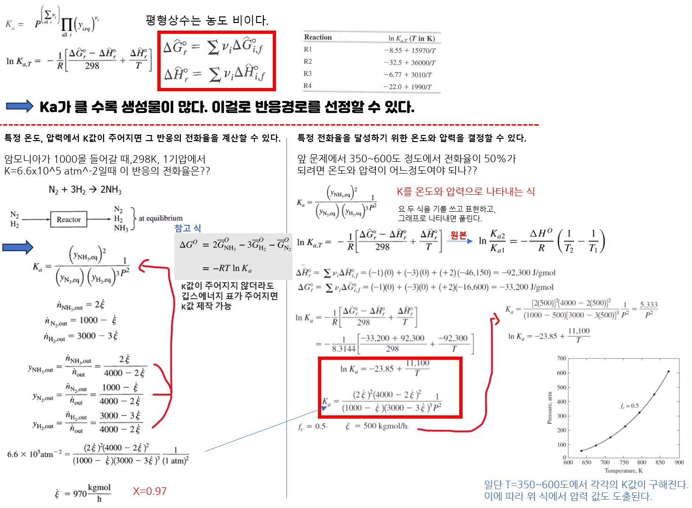
특정 온도와 압력에서 전화율과 최종 생성물의 분율 계산하기 예제
예제 풀이: 암모니아 반응이 1bar, 300K에서 일어날 때 a)평형상수, b)수소의 평형 전환율, c)평형상태에서 생산물 농도 분율을 계산하여라. 다음 표는 300도에서 깁스에너지 표이다.
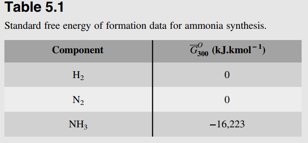
a)평형상수
평형상수는 농도분율이다. 그러나 아직 여기서는 농도를 알 수 없으므로 다음 식을 이용한다.
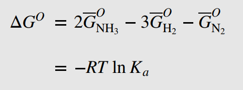
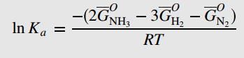
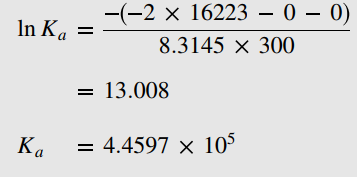
b)수소의 평형 전환율
기준을 수소 또는 질소로 잡는다. 수소로 잡을 경우 수소의 몰수가 1몰, 질소는 1/3몰이 되므로 계산이 복잡해지니 질소를 기준으로 잡고 질소 1몰, 수소 3몰을 투입했다고 가정한다. 이후 질소의 전환율을 X, 수소의 전환율을 3X로 정하면 다음과 같다.
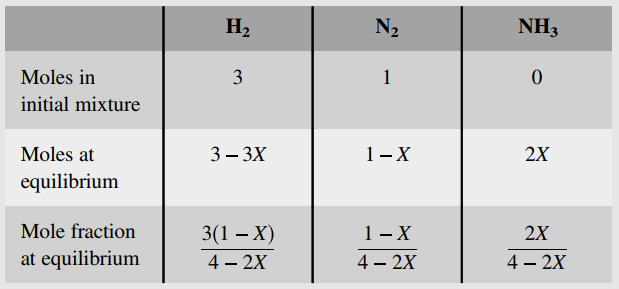
이걸로 평형상수 식을 제작하면 다음과 같다.
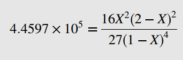
계산기를 통해 질소의 전화율이 0.97임을 알 수 있으며 X=0.97을 대입 시 최종적인 농도는 다음과 같다.
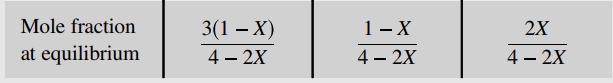
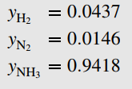
즉 1bar, 300K에서 반응이 일어난다고 가정할 때 97%의 전환을 가져올 수 있으며 생성된 기체에서 암모니아의 분율은 0.94이다. 따라서 특정 온도, 압력에서 K값이 주어지지 않더라도 K값을 제작하여 쓸 수 있다.
3.2:반응기의 온도
압력이 정해졌을 때 온도와 전화율의 관계 역시 반응평형으로부터 도출할 수 있으며 위 사진의 오른쪽 항과 푸는 방법이 같다. 일반적으로 발열 반응의 경우 온도가 증가함에 따라 평형 전화율이 낮아지고 흡열반응은 온도가 올라가야 전화율이 올라간다.
이제 반응속도에서 온도의 영향을 고려하자.
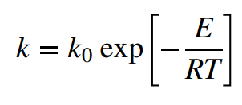
온도가 올라가면 반응속도가 빨라진다.
자 이제 이 둘을 조합하여 반응에 따른 온도 설정에 대해 알아보자.
단일반응
1)흡열반응
흡열반응의 경우 높은 온도에서 조업시 전환율과 반응속도가 상승한다. 따라서 가능한 한 높은 온도가 좋다.
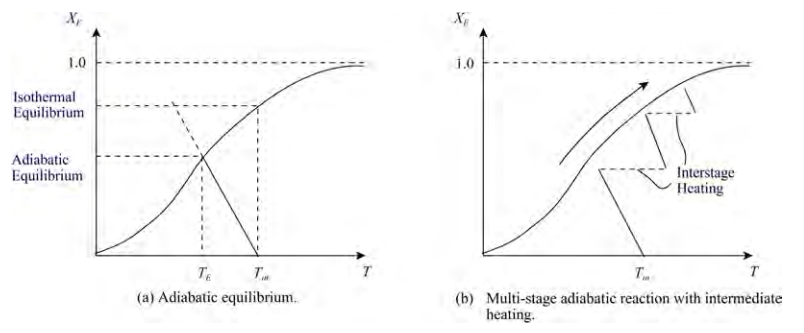
주의 점은 흡열반응의 경우 반응시 초기 온도에서 평형 온도로 온도 하락이 존재한다. 이는 반응물이 온도를 흡수해서이다. 따라서 여러 번의 재가열을 통해 여러 단계로 반응물을 반응시키는 것이 좋다.
2)발열반응
발열반응의 경우 온도가 올라가면 평형 전화율이 줄어든다. 따라서 반응 초기에는 반응속도를 올리기 위해 온도를 높이지만 이후 평형 전화율에 가까워질 때마다 온도를 낮추어 반응속도와 전화율을 둘다 잡는 것이 추천된다.
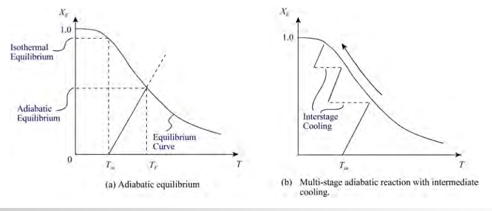
복합반응
복합반응의 목적은 주어진 전환율에 대해 부피를 최소화하는 것이 아니다. 선택도를 최대화하는 것이다.
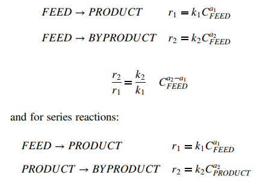 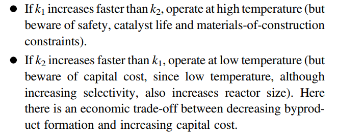
3.3반응기 압력
온도와 압력은 전화율에 큰 영향을 미친다.
만약 반응이 몰수의 감소를 유발한다면 압력 증가 시 반응의 전환율이 증가한다.
반응이 몰 수 증가로 이어진다면 압력 감소 시 반응의 전환율이 증가한다. 하지만 낮은 압력은 반응속도의 감소를 가져오고 반응기의 부피를 증가시킨다. 그러므로 평형 초기에는 높은 압력을 유지하다가 평형에 가까워지면 점차 압력을 낮추는 방안이 요구된다.
복합반응의 경우 부반응을 줄일 수 있는 압력 조건을 택하는 것이 옳다.
3.4 반응기 상
선택이 자유롭다면 액상이 기상보다 선호된다.
3.5 반응기 농도
A)공급비율
반응물을 양론 계수대로 공급하기 보다 하나를 과량 공급하는 것이 바람직하다. 한 공급물의 과잉은 평형 전환율을 증가시키기도 한다. 이는 평형 상수를 제작하는 매커니즘에 의해 발생한다. 더 자세히는 공급물이 늘어나면 공급물을 줄이는 방향으로 평형이 이동하는 르샤틀리에 원리를 따른다.
예를 들어 다음 반응에서
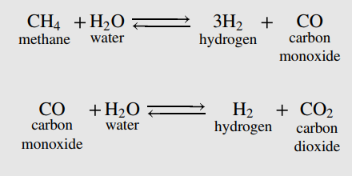
물의 공급비율을 높임에 따라 전화율은 다음과 같이 바뀐다.
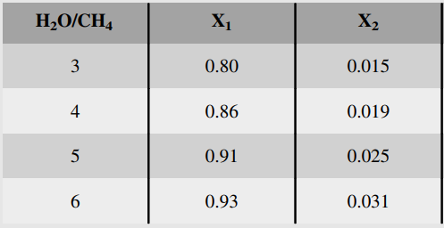
B)불활성 물질
만약 반응이 몰 수의 증가 또는 감소를 유발한다면 불활성 물질을 첨가하여 평형 전환율을 조작할 수 있다.
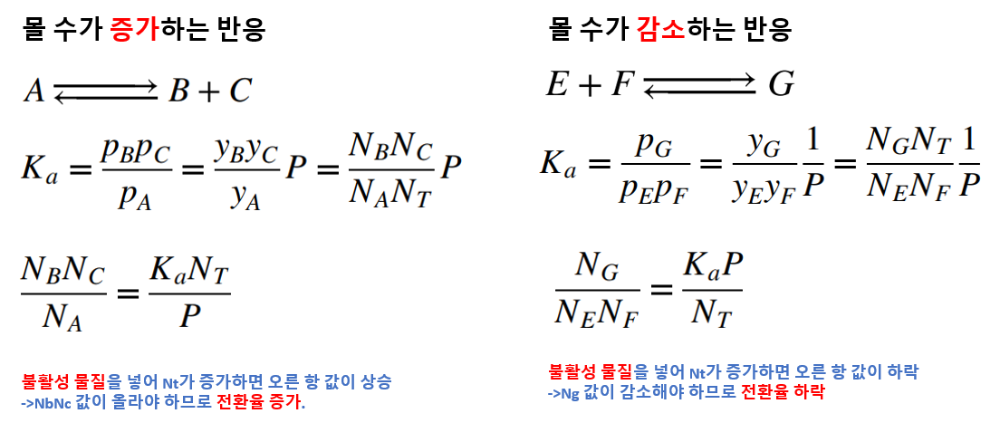
C)반응 중 생성물 제거
반응이 진행됨에 따라 반응기에서 생성물 중 하나를 연속적으로 제거하여 평형 전환율을 높일 수 있다. 이는 르샤틀리에 원리에 의한 것이다.
3.7:촉매
촉매를 쓸 수 있다면 반드시 사용해야 한다. 촉매는 반응을 가속화 시키지만 평형위치의 변화는 일어나지 않는다.